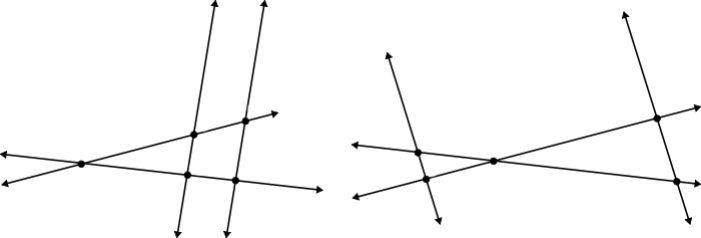
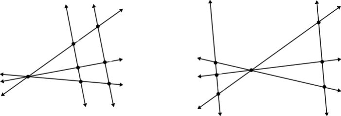

希罗多德告诉我们，泰勒斯曾经准确地预测了公元前585年5月28日的日全食。他还能解释尼罗河泛滥的原因，靠观测来估算船只距离河岸的距离，并通过金字塔的阴影来计算它的高度。后两种计算说明他对三角学已经有相当深刻的认识。他证明了几何上的一个定理，这个定理说，如果A、B、C是圆周上的三点，而且AC是该圆的直径，那么角ABC（用∠ABC来表示）必然是直角。换句话说，直径所对的圆周角永远是直角。虽然古埃及人和古巴比伦人好像都已经知道这个结论，但没人能够证明它。这个定理现在被称为泰勒斯定理。另一个定理有时也叫作泰勒斯定理，但是为了和前一个定理分开，现在一般称为截距定理。简述如下：
如果S是两条直线的交点，另有两条平行线，它们分别和过S点的两条线相交于点A、B和C、D（图4），那么以下定理成立：
1.SA/AB=SC/CD,SB/AB=SD/CD,SA/SB=SC/SD。
2.SA/SB=SC/SD=AC/BD 。反之，如果两条相交的直线被一对任意直线所截，而且如果SA/AB=SC/CD成立，那么那对任意直线一定相互平行。
3. 如果有两条以上直线相交于点S，那么AF/BE=FC/ED。


图 4：截距定理的示意图
从这三个定理我们还知道，图4中的三角形SAC和三角形SBD相似，而且相似三角形的相应的线段之比相等。
泰勒斯的定理是所有几何定理的开端。他还试图借助观察经验和理性思维来解释世界。比如他提出一个假说，“水是万物之本原”。他是古希腊第一个提出“什么是万物本原”这个哲学问题的人。由于他的杰出贡献，泰勒斯被称为“科学之父”。
自从泰勒斯从埃及回到希腊，那里的科学，特别是数学就朝着崭新的革命性的方向突飞猛进地发展。
追寻和谐的规律，你就会发现知识。
去了解你心中的世界，而不要去寻找世界中的你，否则你只会发出幻象。
镌刻在古埃及卢克索神庙墙上的箴言
人生最难的事情是认识你自己。
泰勒斯
你来试试看？本章趣味数学题：
1.怎样通过“兰德纸草书”里面圆柱形谷仓的体积公式V=[(1-1/9)d]2h来得到古埃及人对圆周率的近似值？
2.胡夫金字塔的底面是边长为230.4米的正方形，金字塔的高为146.5米。计算金字塔的体积。
3.你能想出来泰勒斯是如何测量金字塔的高度的吗？